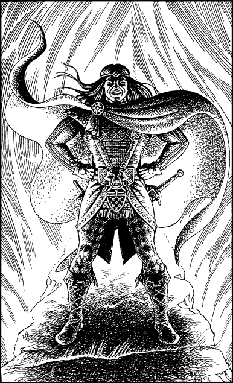

80
The grating rumble of heavy stone on stone heralds the sudden appearance of the impostor. Like some secret door to a nightmare realm, the entire far wall of this vault is slowly sliding open. Violent tremors shake the floor and orange tongues of flaming gas shoot from the ever-widening gap. Silhouetted in the centre of this fiery portal is a warrior clad in a parody of the robes of a Kai Grand Master. His stature and his facial features bear an uncanny resemblance to your own, yet the two of you are not entirely identical. The eyes of this impostor betray his true nature, for they are black and cold; they are like two tiny windows through which you can see the evil lurking deep within his heart.
The portal crackles and roars like a blazing furnace, yet it radiates no heat. You sense powerful magic at work here, and you shout a command to your young Kai comrades to prepare themselves for combat. They react as one, their years of training suppressing their fears, and swiftly they draw arms and form up in a protective circle around you. The impostor unsheathes his black-bladed sword and gives vent to a chilling laugh that momentarily drowns the roar of the flames. His cruel laughter fills your head, and suddenly the stone walls of the vault seem to writhe and buckle inwards. Your psychic Kai defences resist this illusion, and the distortion ceases, yet as it does so you realize that something important has changed. You command your companions to retreat towards the chute, but they do not respond. They are completely rigid, frozen immobile like four stone statues.
‘Ha ha ha … ’ cackles the impostor, ‘so we meet at last, Lone Wolf.’ He advances a little nearer, and you feel an icy chill wash over you. The body of this bogus Kai Lord radiates coldness.
‘How I have enjoyed myself in your guise,’ he sneers. ‘Let me introduce myself … I am Wolf’s Bane. An apt name, don’t you think?’
‘What is your purpose?’ you growl in reply, your hand poised to draw a weapon in case he should attempt to launch a sudden attack.
‘Why, I’ve come to kill you, of course,’ he retorts, his voice full of contempt. ‘There should be but one Grand Master, and only I am worthy of such distinction.’ The impostor narrows his coal-black eyes and curls back his lip in disdain.

‘And I intend to prove my worthiness, Lone Wolf,’ he adds, with quiet menace.
‘How so?’
‘By a duel,’ he replies. ‘I challenge you to a duel. A fight to the finish. A fight between just you and I, Lone Wolf.’
‘And if I refuse your challenge?’ you retort, defiantly.
‘Then your four frail acolytes will die.’ The impostor sweeps his sword in a wide arc, as if to emphasize his threat, and the fiery wall at his back begins to change. The plumes of flame twist and spin with increasing speed until the wall is transformed into a swirling vortex. Fear tightens its icy fingers around your throat as you witness the creation of a Shadow Gate—a portal to another plane of existence. At once you know his threat is real. If he were to direct the power of the vortex towards your paralysed companions, they would be helpless to resist. They would be sucked into the Shadow Gate and destroyed.
‘Very well,’ you say, ‘I accept your challenge.’
Wolf’s Bane gives a triumphant smile and whirls his black sword around his head. Then he dashes the blade to the floor and, in a terrifying instant, a mighty gust of wind tears the two of you off your feet and sends you both hurtling into the fiery heart of the dread Shadow Gate.